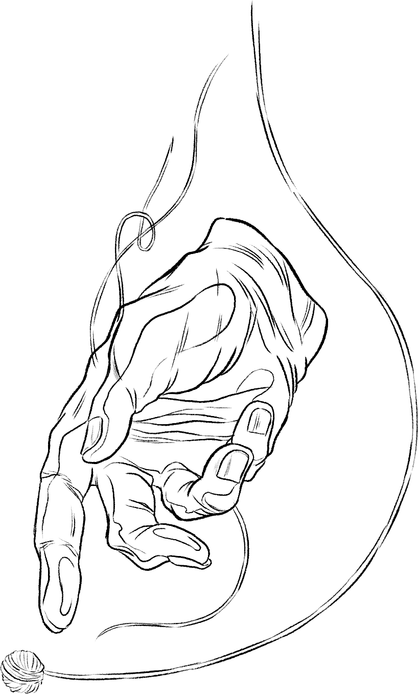

As a child I had always loved creating my own images, rather than taking photographs and movie clips,
Fitting pictures against words,
letters against spaces,
became my favourite past-time,
In between crossing oceans and moving schools, drawing and other creative pursuits became my way of fitting in and making sense of life.
The first time I came into contact with coding was through a design assignment at university.
I was still trying to fit everything in,
to make sense of it all,
And I was lost from the outset.
I disappeared in the crowded lecture theatres and disjointed tutorial rooms.
My peers were strides ahead of me, picking up techniques faster than I could keep up.
The loops kept looping,
the errors kept falling
out
of
place.
Nonetheless I soldiered on into the workforce, believing that coding was a career for the elite few and it was beyond me.
I became an illustrator...
...then a court bailiff...
...an administration assistant
The work kept the wheels turning, kept the lights switched on. But I never felt fulfilled or valued.
Would I find greater value in myself had I took a risk, and moved for the technology path instead?
Each day after work, I would try to untease coding on my own, copying and pasting as I go.
But the internet is a marianas trench of resources, it is
as deep as you want to go.
Slowly but surely, I became lost and frustrated in my search again.
I hope to make sense of how all the different pieces
of web development fit together,
and bring my skills, passion back into alignment again.
I have been inspired by the work of Jillian Tamaki,
Senor Salme, Steve Scott, Julian Callos, and Jorn Kaspuhl.
Javascript code followed from original example written by Chris Coyier
Rachel Wong 3 February 2019